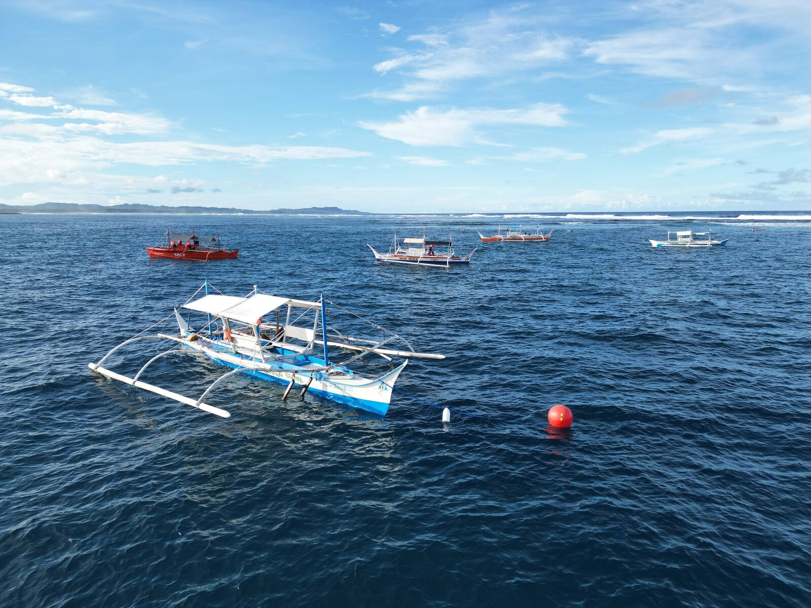

Best time to dive · June to August
Siargao diving season
June to August is the best time. The reef sites near General Luna are diveable all year.
The short answer
The best months to dive Siargao are June to August. Our everyday sites, Rock Island and Semibayan, are diveable all year. Blue Cathedral, on the Pacific side, is seasonal: March to September.
Reef sites by month
Best months Good diving at the reef sites
Blue Cathedral by month
Season, on days without swell Closed
When we stay on land
Only a strong typhoon or very strong wind stops us from diving the reef sites, and that is rare. Current alone doesn't: at Rock Island and Semibayan a mooring line runs from the boat to the reef, so you go down and come up along it. Semibayan isn't a surf break, so it stays calm when the swell is big.
Blue Cathedral and the Pacific side
Blue Cathedral faces the open Pacific and needs a day without swell. That happens from March to September. Outside those months, or when the swell is up, we dive the reef sites instead.
Planning your dates
Tell us on WhatsApp when you're in Siargao and what level you dive. We choose the site for your level and the day, and confirm the plan with you.
Planning a trip?
Send us your dates and what you'd like to do. We reply fast.
Diving season questions
What is the best month to dive Siargao?
June to August. The reef sites are good all year, and Blue Cathedral is possible from March to September.
Is the water warm?
The water stays warm all year, so conditions suit beginners and experienced divers.
Does the weather stop the diving?
Rarely. Only a strong typhoon or very strong wind cancels diving at the reef sites. On big swell days we go to Semibayan, which isn't a surf break.
Can I dive Blue Cathedral all year?
No. Blue Cathedral needs a day without swell, which means March to September. Message us your dates and we'll tell you what to expect.
Dive sites around Siargao
See you on the boat.
Message us with your dates and what you'd like to do. We usually reply on WhatsApp within minutes.